Instrucciones para entregar la práctica
Tenéis que demostrar que habéis realizado las prácticas de la 4 a la 15.
Corrección
-
Se dará 1 punto por apartado demostrado (del 5 al 15).
-
No es necesario indicar cada captura, únicamente las que sean necesarias para demostrar que se ha hecho el ejercicio.
-
El apartado 16 completo da 1 punto extra en el examen. Solo se dará el punto si se han hecho los 10 anteriores.
Personalización de la práctica
En las capturas tenéis que demostrar que la configuración es diferente a la de los compañeros. Por ello:
-
Siempre que podáis adaptarlas a vuestros nombres
-
Cuando os pidan IPs a vuestro rango de IP.
-
Si tenéis que crear carpetas o archivos, inventaros nombres que sean diferentes
-
Es necesaria una pequeña explicación de lo que habéis hecho.
Formato
- Se debe presentar en formato Google Docs presentación, máximo 2 diapositivas por apartado.
Entrega
-
Tendréis 5 horas más: lunes 1, martes 2 y jueves 2 más.
-
Plazo máximo para la entrega: Domingo 13
Escenario de prácticas
Para estas prácticas de web, vamos a montar una red de toda la clase para poder compartir nuestro trabajo y hacer pruebas entre nosotros.
Vamos a partir de la red 172.16.254.0/24, y cada uno de vosotros tendrá
5 IPs asignadas:
- 2 IP para servidores
- 3 IP para clientes
Las IP las tendréis que sacar de un Excel que yo os facilitaré. Todos los equipos se configurarán con IPs estáticas.
Configuración de servidor Ubuntu Server
Para ello, seguiremos una serie de pasos:
-
Abrimos el Excel de asignación de IPs y nos anotamos en algún sitio nuestro rango de IPs
-
Abrimos nuestra MV ubserver01 y configuramos el archivo interfaces
a. Solo debe estar la interfaz enp0s3 que va a tener asignación estática
b. La configuración IP se coloca a partir de la información del Excel
c. Apagamos la MV
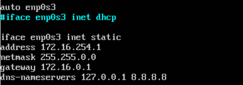
{width="2.7948720472440947in" height="0.9857436570428696in"}Ojo cambiar: dns-nameservers 172.16.254.1 8.8.8.8
-
Desde el menú de VBox, accedemos a las propiedades de red de la MV ubserver01 y dejamos solo activo el primer adaptador de red configurado como adaptador puente.
-
Arrancamos la MV
-
Comprobamos que la interfaz está habilitada desde VBox
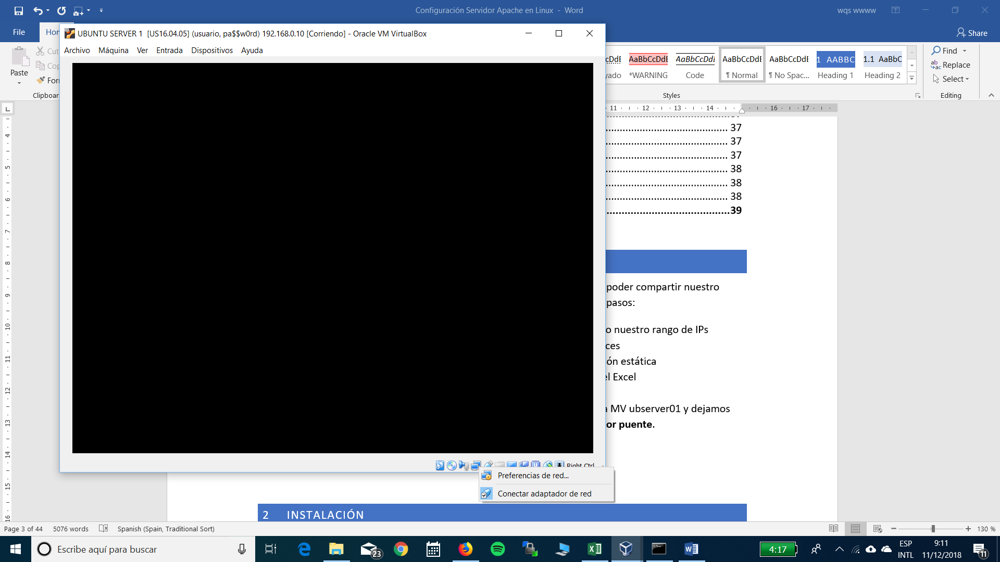
{width="2.5169772528433945in" height="0.5833333333333334in"}- Lanzamos ping contra el servidor DNS (172.16.254.1)
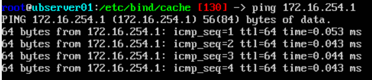
{width="3.8269225721784776in" height="0.8294805336832896in"}- Intentamos resolver la IP de un nombre de dominio
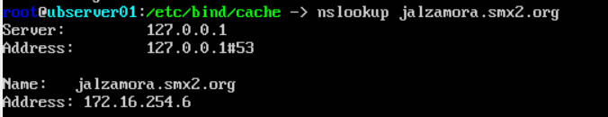
{width="3.961538713910761in" height="0.7618339895013123in"}Configuración del cliente Ubuntu Desktop
Repetimos los pasos con un cliente Ubuntu Desktop, y configuramos sus parámetros IP:
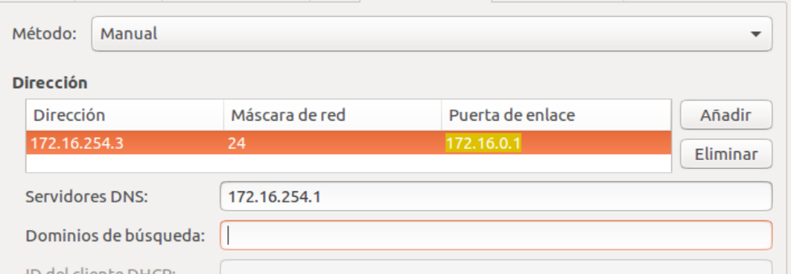
{width="4.735999562554681in" height="1.641227034120735in"}No está de más comprobar que no tenemos un proxy configurado en Firefox que nos esté impidiendo que todo funcione.
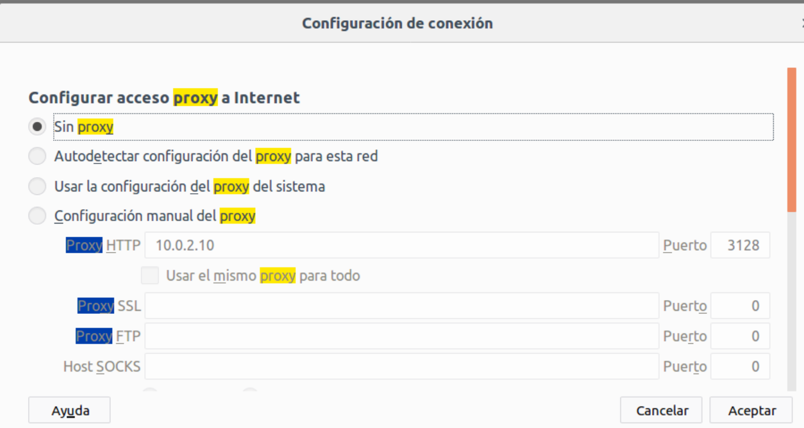
{width="5.025640857392826in" height="2.6824300087489066in"}Reiniciamos el servidor: sudo systemctl restart apache2
Dominios y subdominios
Cada uno de vosotros tendrá un subdominio creado que apuntará a vuestra MV ubserver01. Deberéis acceder remotamente al servidor DNS y editarlo para agregar vuestro subdominio. Yo os iré avisando por turnos.
-
El dominio de la clase será smx2.org.
-
Cada máquina tendrá un nombre de subdominio con vuestra inicial de nombre y el primer apellido. Por ejemplo: jalzamora.smx2.org.
-
Si todo va bien, con vuestro nombre de dominio particular se podrá acceder a vuestro servidor web.
Instalación
Disponer de un servidor web en el centro nos permitirá alojar nuestras propias páginas y aplicaciones web de forma que den servicio tanto desde dentro de la intranet como desde Internet.
Instalar apache
Comprobar si apache está instalado
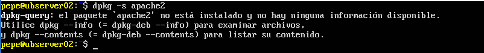
{width="5.905555555555556in" height="0.6479166666666667in"}Actualizamos la información de los paquetes para comprobar las últimas versiones
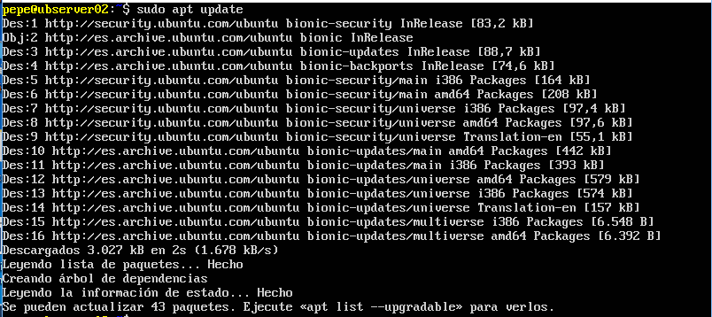
{width="5.905555555555556in" height="2.629166666666667in"}Instalamos apache
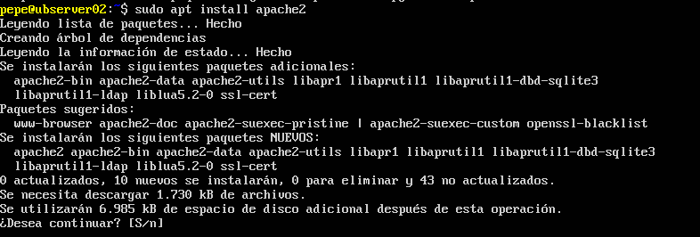
{width="5.905555555555556in" height="1.9986111111111111in"}Podemos comprobar versión de apache que tenemos instalada
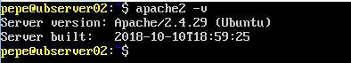
{width="3.1119991251093615in" height="0.5607917760279965in"}Instalamos opcionalmente paquete de documentación
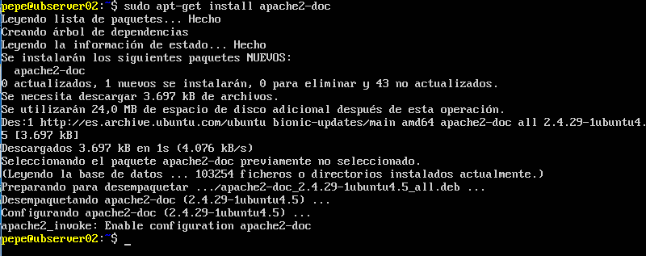
{width="5.905555555555556in" height="2.3402777777777777in"}usuario www-data y el grupo www-data
Por seguridad se recomienda no utilizar el usuario root como usuario propietario del proceso apache2.
Hay que disponer de un usuario y grupo para ello. En Ubuntu se dispone del usuario y grupo www-data.
-
cat /etc/passwrd | grep www-data para comprobar la creación del usuario www-data
-
cat /etc/group | grep www-data para comprobar la creación del grupo www-data
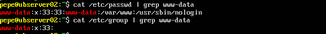
{width="5.905555555555556in" height="0.6180555555555556in"}Directorio contenedor de páginas
Por defecto las páginas web se encuentran en /var/www/html/.
Cualquier carpeta y archivo dentro de esta carpeta será visible desde fuera. Por ejemplo:
-
La carpeta /var/www/html/hola/quetal.html
-
Se vería accediendo a: http://localhost/ hola/quetal.html
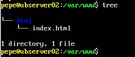
{width="2.383999343832021in" height="1.015566491688539in"}Configuración
El servidor HTTP Apache se configura mediante archivos de texto simples. Estos archivos pueden ubicarse en cualquiera de una variedad de lugares, dependiendo de la forma exacta en que instaló el servidor.
El archivo de configuración predeterminado generalmente se llama httpd.conf. Esto también puede variar en las distribuciones de terceros del servidor.
La configuración se divide con frecuencia en varios archivos más pequeños, para facilitar la administración. Estos archivos se cargan a través de la directiva Include. Los nombres o ubicaciones de estos subarchivos no son mágicos y pueden variar mucho de una instalación a otra.
Directorios de configuración de módulos
Mods disponibles
/etc/apache2/mods-available/
{width="4.60799978127734in" height="0.23462707786526685in"}
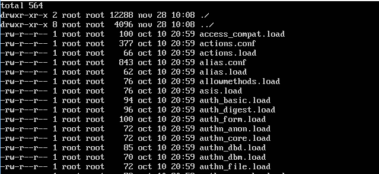
{width="5.103999343832021in" height="2.348535651793526in"}Mods habilitados
/etc/apache2/mods-enable/
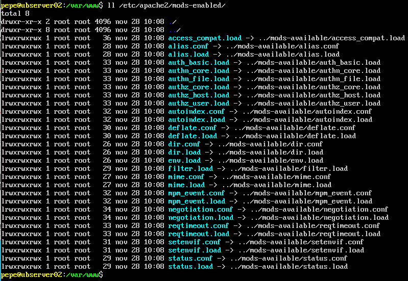
{width="5.905555555555556in" height="4.072916666666667in"}Directorios de configuración de sitios virtuales
Sites available
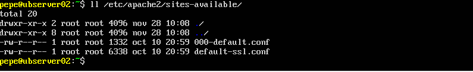
{width="5.905555555555556in" height="0.90625in"}Sites enabled
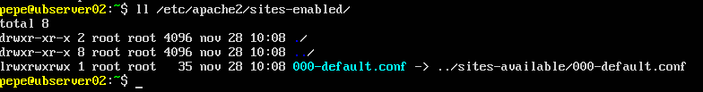
{width="5.905555555555556in" height="0.7756944444444445in"}Directorio de configuraciones locales
/etc/apache2/conf-available/
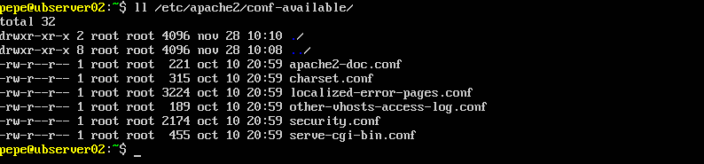
{width="5.905555555555556in" height="1.3756944444444446in"}/etc/apache2/conf-enabled/
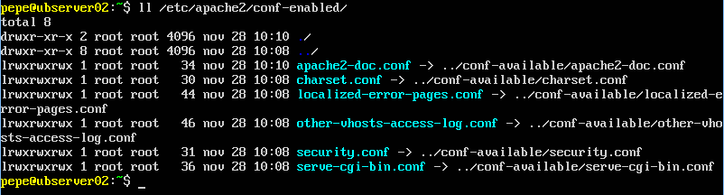
{width="5.905555555555556in" height="1.5902777777777777in"}/etc/apache2/envars
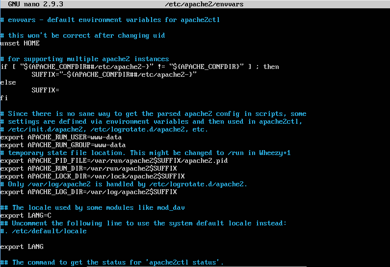
{width="5.905555555555556in" height="4.05625in"}Estado del servicio
Comprobación de que el servidor está INICIADO
Podemos comprobar listando los procesos en ejecución y filtrando con pipes, que existen varios procesos Apache abiertos, síntoma de que está en marcha el servidor.
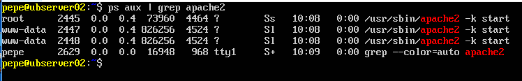
{width="5.905555555555556in" height="0.9152777777777777in"}Arrancar, parar y estado del servicio
Existen scripts en /etc/init.d/ que nos permiten arrancar, parar y reiniciar el servicio apache2, entre otras cosas.
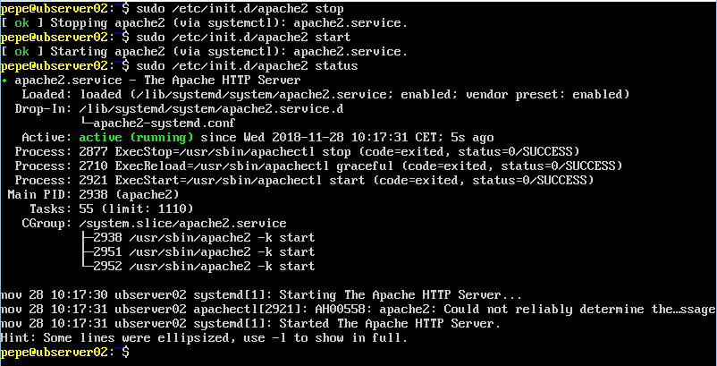
{width="5.905555555555556in" height="3.011111111111111in"}Reiniciar y recargar servicio
Diferencia:
- Restart: para e inicia el servicio
- Reload: el servicio sigue funcionando y se vuelven a leer los archivos de configuración
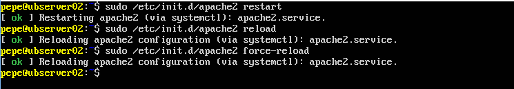
{width="5.905555555555556in" height="1.0222222222222221in"}Reinicio del servidor con apachectl
Apachectl es una interfaz para el servidor del Protocolo de transferencia de hipertexto de Apache (HTTP). Está diseñado para ayudar al administrador a controlar el funcionamiento del demonio httpd de Apache.
El programa /usr/sbin/apache2ctl es el programa de línea de comandos
para manejar Apache en Ubuntu. La sintaxis del comando es bastante
sencilla.
También se puede lograr la misma funcionalidad con el script de inicio apache2. Por lo tanto, los tres comandos que hacen la misma cosa son los siguientes:
Parar servicio
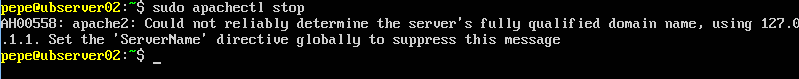
{width="5.905555555555556in" height="0.5840277777777778in"}Arrancar servicio
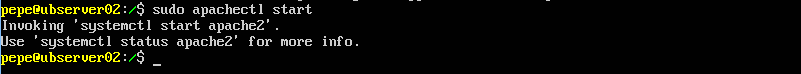
{width="5.905555555555556in" height="0.5458333333333333in"}Puertos
Comprobación de puertos
-
El protocolo HTTP tiene asociado el puerto 80 por defecto
-
Podemos comprobar con netstat que el servidor está escuchando peticiones en ese puerto
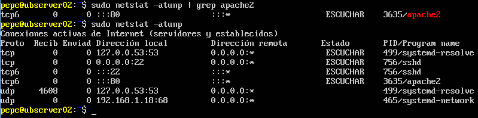
{width="5.905555555555556in" height="1.4631944444444445in"}Configuración de puertos
El archivo ports.conf contiene la información necesaria para que Apache2 escuche en direcciones IP y puertos específicos.
Cuando Apache2 se inicia comienza a esperar peticiones entrantes en determinados puertos y direcciones de la máquina en la que se está ejecutando.
Sin embargo, si se quiere limitar la escucha a:
- Un determinado puerto (o varios)
- En unas determinadas direcciones
- En una combinación de ambos
Hay que especificarlo en los archivos de configuración
Utilización de puertos para crear hosts virtuales
Esto se puede, además, combinar con la posibilidad de usar hosts virtuales, funcionalidad con la que un servidor Apache puede responder a peticiones en diferentes direcciones IP, diferentes nombres de hosts y diferentes puertos.
Consultar el fichero /etc/apache2/ports.conf
-
Comprobar que están habilitados los servidores virtuales por nombre en todas
-
las direcciones IP y en el puerto 80
Directiva Listen
La directiva Listen indica al servidor que acepte peticiones entrantes solamente en los puertos y en las combinaciones de puertos y direcciones IP que se especifiquen.
Si sólo se especifica un número de puerto en la directiva Listen el servidor escuchará en ese puerto, a través de todas las interfaces de red de la máquina.
Si se especifica una dirección IP y un puerto, el servidor escuchará solamente en la interfaz de red a la que pertenezca esa dirección IP y solamente en el puerto indicado.
Se pueden usar varias directivas Listen para especificar varias direcciones IP y puertos de escucha. El servidor responderá a las peticiones de todas las direcciones y puertos que se incluyan.
Ejemplos
Por ejemplo, para hacer que el servidor acepte conexiones tanto en el puerto 80 como en el puerto 8000, desde cualquier interfaz, se puede usar:
Para hacer que el servidor acepte conexiones en dos interfaces de red y puertos específicos, usar
- Listen 192.168.1.1:80
- Listen 192.168.1.5:8000
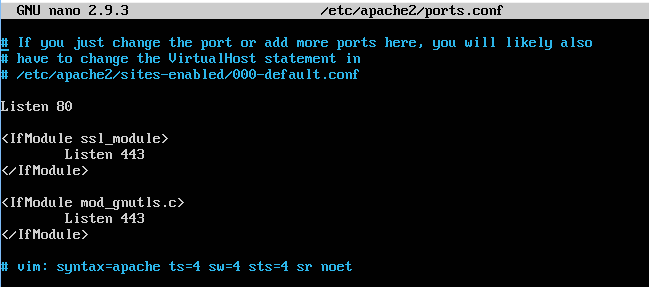
{width="5.28in" height="2.335145450568679in"}En este caso, Apache escuchará en todas las IP de sus adaptadores:
- Abre el puerto 80
- Si el módulo
ssl_moduleestá cargado, también abre el 443 - Si el módulo
mod_gnutls.cestá cargado, también abre el 443
Configuración de cortafuegos
Recordemos que Ubuntu Server trae firewall por defecto. Conviene tenerlo en cuenta, puesto que nuestro servidor va a escuchar en un puerto concreto, y tiene que poder atravesar el Firewall.
-
Al instalar algunos paquetes, se crean perfiles de aplicación con reglas predefinidas para el cortafuegos UFW.
-
Comprobamos que se crean 3 apps para Apache
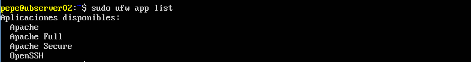
{width="5.905555555555556in" height="0.78125in"}Información de la configuración de app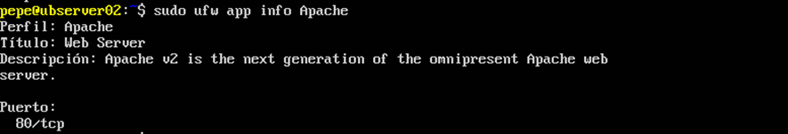
{width="5.9006944444444445in" height="1.0069444444444444in"}Sitios web
Configuración de sites
Un mismo servidor puede alojar más de un sitio web diferente. Para cada uno de ellos, podemos crear un site para, entre otras cosas:
- Tener una configuración específica diferente para cada sitio web
- Habilitar y deshabilitarlos de forma separada.
Sites disponibles
En Apache podemos crear tantos sitios web como queramos. Todos los sitios (sites) están definidos por archivos en la carpeta de sitios disponibles. Podemos ver el archivo de configuración (.conf) de cada site en la ruta /etc/apache2/sites-available/. Por defecto vienen dos sites de ejemplo creados:
Mostrar carpeta de sitios disponibles
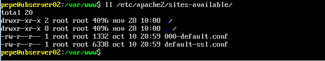
{width="5.303999343832021in" height="1.0016721347331583in"}Estos sites que aparecen en esta carpeta están creados y disponibles, pero no significa que se estén ejecutando. Para ello hay que hacer algunos cambios. Como podemos comprobar, vienen 2 sites creados a modo de ejemplo.
Ver el contenido del sitio por defecto
Abrimos el primer site y podemos ver la configuración del mismo.
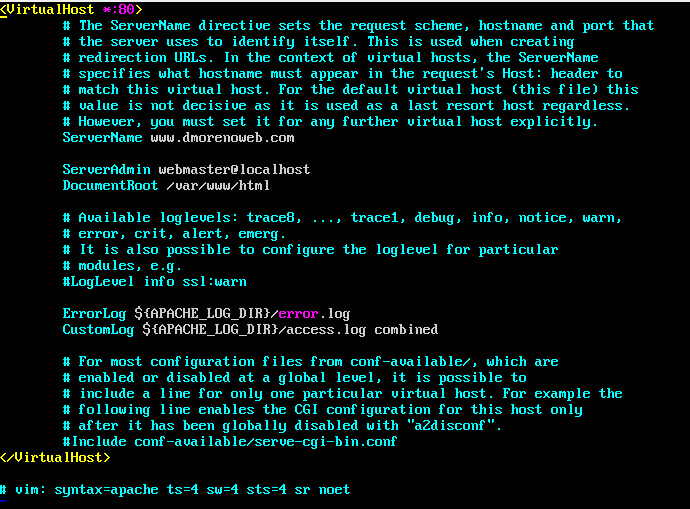
{width="5.905555555555556in" height="4.35625in"}Sites habilitados
Para activar (habilitar) un site y que se pueda ver:
-
Se ejecuta el comando a2ensite mysite (donde el archivo se llama mysite.conf)
-
El sistema crea un enlace simbólico en el sistema de archivos en la carpeta de sitios habilitados (sites-enabled).
-
Los sites que aparezcan en esta carpeta estarán activados y son visibles a priori.
Podemos comprobar que en /etc/apache2/sites-enabled existe el fichero 000-default.conf y es un enlace simbólico al que se encuentra en sites-available
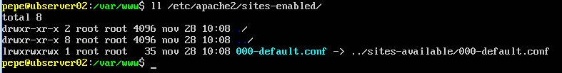
{width="5.905555555555556in" height="0.7729166666666667in"}Habilitar y deshabilitar sites
Para habilitar o deshabilitar un sitio alojado con Apache, puede usar los comandos 'a2ensite' y 'a2dissite', respectivamente. Ambos comandos usan esencialmente la misma sintaxis:
donde ` es el nombre del archivo de configuración del host
virtual de su sitio, ubicado en/etc/apache2/sites-available/, menos la
extensión.conf`.
Crear nuestro propio site
Vamos a copiar el site de ejemplo y vamos a crear uno nuestro, que llevará como nombre el nombre de nuestro subdominio.
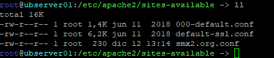
{width="4.127999781277341in" height="0.8845713035870516in"}Lo vamos a modificar para que coincida con nuestra configuración.
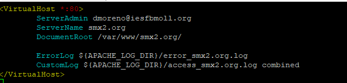
{width="5.383999343832021in" height="1.2934514435695539in"}Necesitaremos crear la carpeta /var/www/xxx.smx2.org/ y copiar dentro un
archivo HTML
Habilitar el nuevo site
Deshabilitamos el site por defecto y recargamos
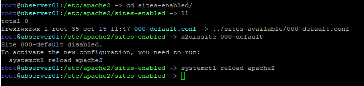
{width="5.905555555555556in" height="1.3972222222222221in"}Habilitamos el site nuevo que hemos creado:
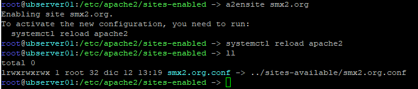
{width="5.905555555555556in" height="1.2583333333333333in"}Accedemos desde un navegador para ver que funciona todo correctamente.
Comprobación de log
En el archivo de log veremos que la petición se ha guardado correctamente dos peticiones. Una para el archivo html, y otra para enviar la imagen que necesita el html para mostrarse correctamente.
Por otro lado, podemos ver los códigos de estado y la IP del ordenador que ha hecho la solicitud
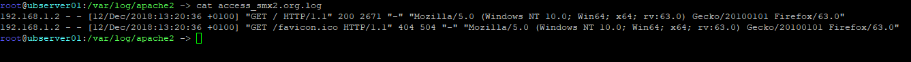
{width="5.84799978127734in" height="0.7084711286089239in"}Acceder desde el navegador al servidor
Comprobamos desde un navegador de un equipo que tenga acceso al servidor que se abre la página por defecto. Esto lo podemos hacer de varias formas:
Utilizando la interfaz de red local
Si ejecutamos el navegador en la misma máquina en la que está corriendo el servidor podemos hacer lo siguiente:
Utilizando la IP del servidor
-
Si estamos en otra máquina diferente a la del servidor, cambiando la IP por la del servidor donde se encuentra instalado Apache
-
Si el servidor se encuentra tras una red NAT, deberemos redireccionar los puertos.
- Ejemplo: http://172.6.254.1
Utilizando un nombre de dominio
Si existe un servidor DNS o tenemos configurado el archivo de host local. Si no existe ninguna de estas dos configuraciones, deberemos conectar utilizando la IP
En cualquier caso, al principio y hasta que lo cambiemos, el navegador nos mostrará la página que trae por defecto Apache, la cual podremos cambiar posteriormente.
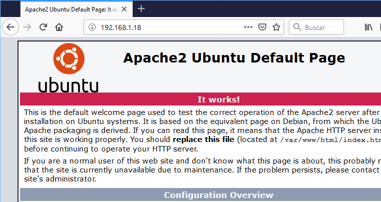
{width="5.905555555555556in" height="2.0159995625546805in"}Configurar un hostname para el servidor
Editar /etc/hostname y /etc/hosts configurar el nombre FQDN del equipo.
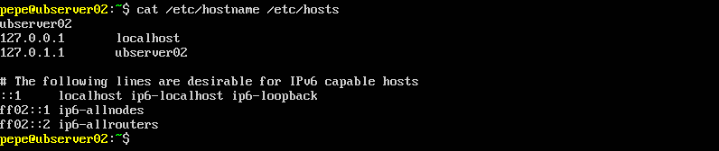
{width="5.905555555555556in" height="1.2465277777777777in"}Crear estructura de páginas web
Comprobar archivo de índice
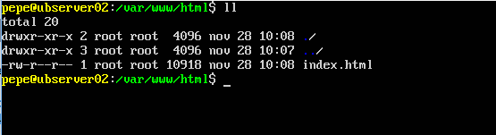
{width="4.975694444444445in" height="0.5833333333333334in"}Acceder a /var/www/xxx.smx2.org/ y comprobar de que existe index.html. Este es el archivo que se sirve por defecto si no se especifica en el navegador ninguno.Crear más archivos y carpetas
A continuación, vamos a crear más archivos y directorios para hacer pruebas.
Crear archivo red.html
Crear el fichero de texto /var/www/xxx.smx2.org/red.html
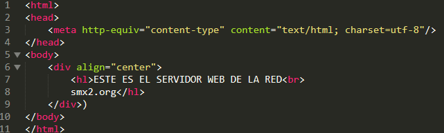
{width="5.905555555555556in" height="1.7777777777777777in"}Crear un nuevo directorio
Crear el directorio /var/www/xxx.smx2.org/datos/ y dentro colocar el archivo datos1.html
Crear el archivo datos.html
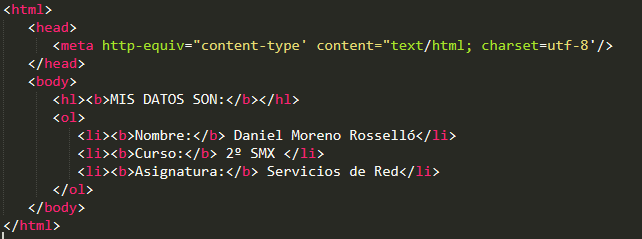
{width="5.6in" height="2.0841961942257217in"}Comprobar funcionamiento desde cliente
Podemos comprobar si la web está funcionando correctamente desde un cliente con interfaz gráfica, que disponga de un navegador. No importa el SO del que se trate, siempre que tenga conexión con el servidor y se pueda comunicar con el
Acceder con IP
Podemos acceder a un servidor HTTP tanto a través de su IP como de su nombre de dominio. En este primer caso, podemos visitar http://172.168.254.1. Tendremos que poner en nuestro caso la IP del servidor. Si está tras una red NAT, deberemos redireccionar los puertos.
Acceder con nombre de dominio
También podemos comprobar que podemos navegar utilizando el nombre de dominio del servidor: http://smx2.org/red.html
Para qué funcione, en algún sitio se tiene que resolver la IP correspondiente al nombre de dominio. Lo podemos hacer en nuestra máquina localmente, o a través de un servidor DNS.
Para esta opción, deberemos modificar el servidor DNS y agregar la siguiente entrada:
Esto no hace falta hacerlo porque ya está configurada la zona en el servidor
Abrir páginas desde el shell
Comprobar con el navegador las URLs
http://localhost http://172.6.254.1/red.html http://smx2.org/datos/datos.html
Si no disponemos de navegador, podemos utilizar WGET. Wget es un paquete de software gratuito para recuperar archivos usando HTTP, HTTPS, FTP y FTPS.
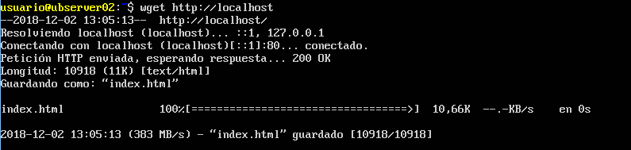
{width="5.905555555555556in" height="1.4041666666666666in"}Navegador en shell
Podemos también utilizar un navegador para shell, como Lynx, si queremos ver de una manera aproximada como queda la página.
Secciones
Las directivas presentes en los ficheros de configuración pueden ser de aplicación para todo el servidor, o puede que su aplicación se limite solamente a determinados directorios, ficheros, hosts, o URLs.
Las secciones de configuración y los ficheros .htaccess para modificar el ámbito de aplicación de las directivas de configuración.
Tipos de secciones
Existen dos tipos básicos de secciones de configuración.
-
Por un lado, la mayoría de las secciones de configuración se evalúan para cada petición que se recibe y se aplican las directivas que se incluyen en las distintas secciones solamente a las peticiones que se adecúan a determinadas características.
-
Por otro lado, las secciones de tipo
e , se evalúan solamente al inicio o reinicio del servidor.
Si al iniciar el servidor las condiciones son las adecuadas, las directivas que incluyen estas secciones se aplicarán a todas las peticiones que se reciban. Es caso contrario, esas directivas que incluyen se ignoran completamente
Sección directory
La sección directory engloba una o más directivas de configuración que sólo se aplican al directorio y subdirectorios especificados.
Se especifica: <Directory /path/a/directorio ></Directory>
El argumento /path/a/directorio puede ser:
- Un nombre de directorio (ruta absoluta)
- Una expresión regular
Dentro de una sección podemos incluir tantas directivas como queramos.
Ejemplo de configuración de directory
Este es un ejemplo de configuración, no hay que hacerlo. Las líneas
tomadas del archivo /etc/apache2/apache2.conf. Partes importantes:
-
Optionsespecifica Indexes (mostrará el contenido de la carpeta si es necesario) -
AllowOverrideindica si se pueden sobrescribir las opciones de esta carpeta a través de un archivo externo (.htaccess). Lo veremos luego. -
Allow from allnos indica que cualquiera puede acceder al contenido de esta carpeta desde el navegador.
<Directory "/usr/share/apache2/icons">
Options Indexes MultiViews
AllowOverride None
Order allow,deny
Allow from all
</Directory>
Permitir solo acceso a directorio a una red concreta
Crear un directorio llamado clase en /var/www/xxx.smx2.org/. En este
directorio:
- Denegar la entrada a todo el mundo
- Permitir a los ordenadores de nuestra red.
Si hacemos esto, todos los equipos desde 172.16.254.1 hasta 172.16.254.255 podrán ver la carpeta. El resto, no. Para ello editamos el archivo apache2.conf
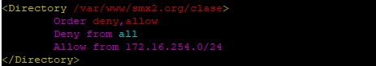
{width="4.471999125109361in" height="0.7920166229221347in"}Si probamos a acceder desde el navegador desde un ordenador fuera de esta red:
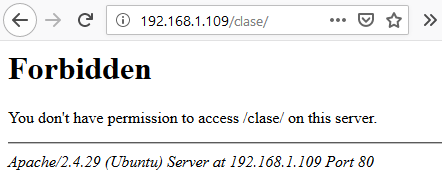
{width="2.83200021872266in" height="1.1404888451443569in"}Permitir solo acceso a directorio a un equipo concreto
Puedo hacer que solo yo pueda ver esta carpeta desde un equipo en concreto:
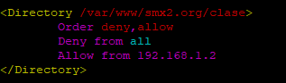
{width="2.903999343832021in" height="0.8519630358705161in"}En este caso, el equipo 192.168.1.2 será el único que tenga acceso a la carpeta.
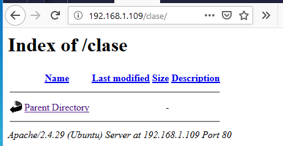
{width="2.6718339895013123in" height="1.327584208223972in"}Sección files
Las directivas incluidas en una sección Files se aplican al archivo especificado sin tener en cuenta en qué directorio se encuentra. Es decir, la directiva Files limita el ámbito de aplicación de las directivas que incluye según el nombre de los archivos.
Denegar acceso a un archivo concreto
En el ejemplo siguiente las directivas de configuración, cuando se colocan en la sección principal del archivo de configuración, deniegan el acceso:
A cualquier archivo llamado privado.html de cualquier carpeta
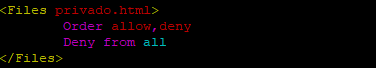
{width="3.3919991251093613in" height="0.6134470691163605in"}Podéis crear varios archivos privado.html en diferentes carpetas y comprobar que no podemos acceder a través del navegador a ninguno de ellos.
Utilización conjunta de directory y files
También se pueden utilizar de forma conjunta las secciones
-
Denegará el acceso a
/var/www/xxx.smx2.org/clase/privado.html -
Cualquier otra aparición de privado.html que se encuentre en
/var/www/xxx.smx2.org/o cualquiera de sus subdirectorios si que se mostrará.
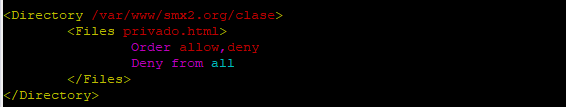
{width="4.655999562554681in" height="0.8801979440069991in"}Especificar un conjunto de archivos al que aplicará una configuración
El argumento de
<Files ~ ".(gif|jp?g|png)$">
donde
-
'?' sustituye 0 o una ocurrencia de la expresión regular anterior (1 carácter)
-
'*' equivale a cualquier secuencia de caracteres
-
'$' indica final de línea
-
'' se utiliza para escapar el carácter '.'
Se puede utilizar la sección FilesMatch para trabajar con expresiones regulares.
Sección location
La sección Location está relacionada con el espacio web y cambia la configuración para el contenido del espacio web. Por ejemplo:
Esta configuración evita que se acceda a cualquier URL que empiece por
/privado, utilizándose la palabra privado como expresión regular. Por
ejemplo, se aplicaría a peticiones que comiencen o contengan /privado en
su URL (http://localhost/privado123).
Sección ifmodule
La sección IfModule engloba directivas que se procesarán si el módulo dado como argumento se compila con Apache2.
Esta sección solo se comprueba al iniciar el servidor
Una de las directivas permitidas en IfModule es UserDir.
En este caso, si el módulo usedir está activado, se aplica la
directiva de dentro. En cambio, si no está activado, se ignora.
Sección ifdefine
IfDefine engloba directivas que serán procesadas sólo si se cumple una determinada condición (test) al iniciar el servidor.
IfDefine se usa para marcar directivas que son condicionales.
Las directivas que hay dentro de una sección IfDefine se procesan sólo si el test devuelve un resultado positivo.
Si el test produce un resultado negativo todo lo que haya entre los marcadores de comienzo y final será ignorado.
El test puede ser:
-
nombre-parámetro: las directivas se procesan sólo si el parámetro llamado nombre-parámetro está definido.
-
!nombre-parámetro: hace lo contrario, y procesa las directivas sólo si nombre-parámetro no está definido.
Paso por parámetro
Podemos pasar parámetros por línea de comandos al ejecutar Apache, en lugar de incluirlos en un archivo de configuración. De esta forma, sólo se utilizarán esos parámetros cuando así se utilice en la llamada al servicio. El argumento nombre-parámetro se define cuando se ejecuta Apache2 por la línea de órdenes con la opción -Dparametro, al iniciar el servidor.
Ejemplo:
apache2 -DReverseProxy ...
en el archivo apache2.conf
Como hemos pasado el argumento ReverseProxy, en la sección Ifdefine lo
verá, y el servidor utilizará las directivas que hay dentro.
<IfDefine ReverseProxy>
LoadModule rewrite_module modules/mod_rewrite.so
LoadModule proxy_module modules/libproxy.so
</IfDefine>
Indica que se cargan los módulos mod_rewrite y libproxy, ya que, en el
archivo de configuración existe la directiva IfDefine relativa al
parámetro ReverseProxy con el que se ha lanzado la ejecución de Apache
(-D).
Directivas
Los archivos de configuración de apache2 se encuentran en la carpeta
/etc/apache2. El archivo principal de configuración es
/etc/apache2/apache2.conf. Antes de realizar cualquier cambio en este
archivo, es conveniente realizar una copia de seguridad del mismo ya que
si apache encuentra algún error en el archivo de configuración, no
arrancará.
Directivas
El servidor se configura colocando directivas de configuración en estos archivos de configuración. Una directiva es una palabra clave seguida de uno o más argumentos que establecen su valor.
Las directivas se pueden colocar en muchos sitios, generalmente se responde al considerar dónde desea que una directiva sea efectiva.
-
Si se trata de una configuración global, debe aparecer en el archivo de configuración, fuera de cualquier
, , u otra sección. -
Si se aplica solo a un directorio en particular, debe ir dentro de una sección
que se refiera a ese directorio, y así sucesivamente.
Directiva ServerRoot
La directiva ServerRoot es el directorio raíz donde se almacenan los distintos ficheros que utiliza el servidor Apache salvo que se indiquen rutas absolutas como se indicaba con anterioridad.
Podemos comprobar la directiva en /etc/apache2/apache2.conf
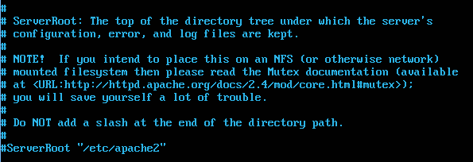
{width="4.895999562554681in" height="1.6782502187226596in"}Conexiones persistentes
KeepAlive indica si se permiten o no las conexiones persistentes, es decir más de una petición por conexión. Puede tomar los valores On u Off. El valor predeterminado es On.
{width="4.703999343832021in" height="2.115250437445319in"}
Ficheros a servir por defecto (Directory Index)
Comprobar página por defecto
Acceder a http://IPdelServidor y mirar qué página se está sirviendo por defecto. Podemos utilizar el comando wget para descargar un contenido web a través de HTTP
{width="5.905555555555556in" height="1.3611111111111112in"}
Renombrar fichero de índice
Renombrar el fichero index.html a indice.html
{width="5.905555555555556in" height="0.17430555555555555in"}
Acceder a http://IPdelServidor. Como no se encuentra index.html, muestra una lista con el contenido del directorio.
{width="3.855999562554681in" height="2.2580850831146106in"}
Cambiar directiva DirectoryIndex
Podemos configurar un índice de directorio para llamar a varios archivos usando el siguiente texto:
Ejemplo:
DirectoryIndex index.html index.cgi index.php
Las líneas anteriores le indican al servidor web Apache que:
- muestre el archivo 'index.html' como el índice de directorio.
- Si este archivo no está disponible, entonces muestre 'index.cgi'
- Si no está disponible, entonces muestre 'index.php'.
Si no está disponible uno de los archivos especificados, el servidor web Apache volverá a su configuración predeterminada, ya sea mostrando un mensaje de error, un mensaje de lista de directorios no disponible o mostrando las listas de directorios de archivos y directorios
Editar /etc/apache2/sites-available/xxx.smx2.org.conf e incluir la
directiva DirectoryIndex para que muestre como índice el archivo
índice.html
{width="4.903999343832021in" height="2.3009120734908137in"}
Reiniciamos el servidor: sudo systemctl restart apache2
Accediendo a la página web en http://IPdelServidor/, aplicando la directiva DirectoryIndex, podemos hacer que se muestra la página red.html.
Opciones sobre directorios
Editar /etc/apache2/sites-available/xxx.smx2.org.conf y modificar la siguiente sección directory, para hacer que el archivo a servir por defecto sea red.html
Aquí debajo cambiar /var/www/ por /var/www/xxx.smx2.org/
{width="3.135513998250219in" height="0.8720002187226596in"}
Tal como indica la sección, a no ser que otra diga lo contrario, todas las carpetas que cuelgan de /var/www/xxx.smx2.org
- Van a buscar un archivo red.html para servirlo como página por defecto (DirectoryIndex)
- De no encontrarlo, mostrarán el contenido del directorio (Options Indexes)
Comprobación
Cuando accedamos a http://IPdelServidor sin especificar ningún archivo, se nos mostrará el documento red.html.
Al acceder a la carpeta datos, http://IPdelServidor/datos/, al no existir ningún documento dentro llamado red.html, muestra el contenido del directorio.
{width="3.0833333333333335in" height="1.2762981189851268in"}
Configurar la carpeta DATOS para mostrar index.html y no listar contenido de la carpeta
Imaginemos que no queremos que para la carpeta datos se aplique la
configuración de /var/www. Deberíamos crear una nueva sección Directory
para /var/www/datos. Todo lo que pongamos aquí, afectará ahora a la
carpeta datos y todas sus subcarpetas. Si alguna directiva no la
ponemos, aplicará las opciones de la carpeta padre (/var/www)
{width="2.863999343832021in" height="0.9288462379702537in"}
En este caso:
-
Hemos definido que el archivo por defecto en esta carpeta será index.html. Por lo tanto, este es el archivo que se servirá cuando accedamos a http://IPdelServidor/datos/
-
En la directiva Options ya no aparece Indexes. Por lo que cuando el servidor no encuentre los ficheros definidos en DirectoryIndex, no listará el contenido del directorio.
Reiniciamos el servidor: sudo systemctl restart apache2
Comprobaciones
Acceder a http://IPdelServidor/ muestra el archivo red.html.
Acceder a http://IPdelServidor/datos/ Al no existir el fichero red.html en /var/www/datos y no se permite el listado del directorio, el servidor retorna el código 403 Forbbiden. Nos muestra un mensaje de prohibido porque la carpeta datos SI existe, pero no nos la quiere enseñar.
Acceder a http://IPdelServidor/datos/meloinvento.html.En este caso lo que pasa es que no existe la página que pedimos, nos dará un mensaje de NOT FOUND
Logs (ErrorLog, CustomLog, LogFormat)
Se nos plantea la cuestión ¿y qué hacer cuando algo no funciona? En primer lugar, se debe consultar el registro de errores o logs: es posible que el problema pueda deducirse de un mensaje de error.
Los logs son archivos que guardan los datos de todos los acontecimientos que tienen que ver con un programa en concreto, anotando el momento en que ocurrió cada acción.
Consultar logs
Por defecto Apache crea sus propios logs, pese a que se pueden crear
otros que sean más convenientes. Por defecto el archivo de registro de
errores se encuentra en /var/log/apache2/error.log.
Se recomienda mostrar los archivos de registro en una consola mientras se accede al servidor para ver cómo reacciona éste en cada momento. Con este fin, ejecute en una consola el siguiente comando como root.
Ejecutar la orden:
tail -f /var/log/apache2/*.log
Mientras mantengamos abierto el shell, se irán mostrando por pantalla solo las nuevas líneas que se añadan al log a partir del momento en que ejecutemos el comando, hasta que decidamos cancelarlo.
Consultar en internet
Otra opción que tenemos, partiendo de la información recogida en los logs, es la de consultar en diferentes sitios en Internet en los que podemos encontrar soluciones o recomendaciones, como por ejemplo:
-
Consultar la base de datos de fallos en la página web http://httpd.apache.org/bug_report.html.
-
Consultar en las listas de correo y los foros de noticias.
-
La lista de correo para los usuarios de Apache: http://httpd.apache.org/userslist.html.
-
Los foros de noticias, se recomienda comp.infosystems.www.servers.unix.
Conocer donde se guardan los archivos de log
El lugar donde se guardan los archivos de log está configurado dentro
del fichero /etc/apache2/sites-available/xxx.smx2.org.conf
{width="5.905555555555556in" height="1.1659722222222222in"}
En general, los ficheros de log se encuentran por defecto en /var/log/apache2/ (la localización habitual). $(APACHE_LOG_DIR) hace referencia a esta carpeta.
{width="5.905555555555556in" height="1.2666666666666666in"}
Consulta del fichero log de errores
Los archivos de log de apache tienen líneas muy largas y conviene
visualizarlos con la pantalla completa. Podemos utilizar grep para
hilar más fino y filtrar los logs, o bien utilizar more y less
para navegar por el resultado.
El log de errores general se suele llamar error.log
{width="5.905555555555556in" height="0.9256944444444445in"}
Consulta del fichero log de accesos
En este archivo se guardan los accesos que se han realizado al servidor junto con las peticiones y respuestas.
El log de accesos se suele llamar accesos.log
{width="5.72967738407699in" height="0.6783617672790901in"}
Como podemos ver en este caso, las últimas solicitudes han sido
peticiones GET a la URL /privado/. Al no tener permiso, el servidor nos
ha contestado con un "Error HTTP 401 No autorizado"
Códigos de error (ErrorDocument)
En el caso que suceda un error porque el documento solicitado no existe, se nos mostrará un aviso en el navegador ligado al error HTTP 404.
Configurar directiva ErrorDocument
Configurar mensaje
Podemos configurar el servidor virtual por defecto cambiando la directiva ErrorDocument para que presente un texto de aviso.
Para ello se debe modificar /etc/apache2/sites-available/xxx.smx2.org.conf para que cuando retorne el código de error 404 (página no encontrada) envíe el texto "Página no encontrada en el servidor de la red".
{width="5.905555555555556in" height="0.76in"}
Reiniciamos el servidor:
sudo systemctl restart apache2
Podemos comprobar que funciona accediendo a una página cualquiera inexistente, por ejemplo http://IPdelServidor/noesta.html. Así podemos forzar un error not found 404 que desencadene la configuración que hemos hecho.
Nos debería mostrar el mensaje personalizado para el error.
{width="5.905555555555556in" height="0.7520002187226597in"}
Crear archivo para error no encontrado
En lugar de una frase, quedaría mejor mostrar un documento HTML cada vez que no se encuentre un archivo. Para ello, podemos configurar el servidor virtual por defecto cambiando la directiva ErrorDocument para que presente una página de aviso en un archivo html que tengamos en el servidor.
Crear fichero personalizado
- Crearemos el archivo en
/var/www/xxx.smx2.org/no_encontrada.html - Escribiremos su contenido en lenguaje HTML
{width="5.207999781277341in" height="1.4453062117235345in"}
Modificar archivo de configuración del site
Deberemos de modificar el archivo de configuración /etc/apache2/sites-available/xxx.smx2.org.conf para que cuando retorne el código de error 404 (página no encontrada) presente el contenido del archivo /var/www/no_encontrada.html
{width="5.905555555555556in" height="0.8208333333333333in"}
Reiniciamos el servidor: sudo systemctl restart apache2
Probar que se muestra el archivo creado
Podemos acceder a una página que no exista, como http://IPdelServidor/noesta.html y comprobar que se muestra el archivo creado para este fin.
{width="5.905555555555556in" height="1.2948720472440944in"}
Directorios virtuales
Directorios Virtuales (Directiva Alias)
Podemos hacer que se pueda acceder a otras carpetas fuera de la carpeta /var/www utilizando alias. Estos alias, redirigirán una ruta de la URL a una carpeta concreta en el servidor.
-
Por defecto, http://IPdelServidor/wiki lleva a la carpeta /var/www/wiki.
-
También podríamos alojar nuestros documentos en otra carpeta, como por ejemplo /home/alumno/wiki, y podríamos conseguir, por ejemplo, que http://IPdelServidor/wiki/ redirigiera las peticiones a esta carpeta.
Para poder conseguir esto, una de las estrategias posibles es la de utilizar alias. Viene a ser un acceso directo que nos lleva de una carpeta a otra.
Iniciar sesión como usuario alumno y crear directorio {#iniciar-sesión-como-usuario-alumno-y-crear-directorio .ListParagraph}
Pasos
- Crear una cuenta llamada
alumnoe iniciar sesión con este usuario - Crear la carpeta
/home/alumno/wiki - Dentro crear una página
wiki1.htmlque contenga "PÁGINA WIKI 1"
{width="5.905555555555556in" height="0.26319444444444445in"}
Documento /home/alumno/wiki/wiki1.html
{width="5.905555555555556in" height="1.5027777777777778in"}
Iniciar sesión como administrador y crear el Alias /wiki {#iniciar-sesión-como-administrador-y-crear-el-alias-wiki .ListParagraph}
Gracias al alias, cuando visitemos http://IPdelServidor/wiki, nos redirigirá al contenido de la carpeta /home/alumno/wiki.
{width="3.504348206474191in" height="1.1405653980752406in"}
Además, deberemos buscar y cambiar en la sección directory / (raíz) de apache2.conf para que ponga require from all. Sino no funcionará
Reiniciamos el servidor:
sudo systemctl restart apache2
Acceder a la página wiki {#acceder-a-la-página-wiki .ListParagraph}
Nos daremos cuenta de que aparece el listado del directorio /home/alumno/wiki ya que la directiva DirectoryIndex está en index.html y al no existir el archivo index.html, siguiendo la directiva Indexes lista el directorio.
{width="3.9239905949256344in" height="1.9439993438320209in"}
Directorios Virtuales (usando enlaces simbólicos)
Un enlace simbólico es un tipo de archivo especial que contiene una ruta a otro archivo. De esta forma, cuando accedemos a un enlace simbólico desde un editor de texto u otro programa, lo redirige al archivo indicado por la ruta del enlace.
Sintaxis:
-
Para crearlo:
ln -s
-
Para borrarlo:
rm
Nota: Al borrar el enlace simbólico no se borra el archivo destino
Pasos a realizar:
- Iniciar sesión como usuario alumno.
- Crear directorio
/home/alumno/blog/ - Dentro crear el archivo blog1.html con el texto "PÁGINA BLOG 1"
{width="5.905555555555556in" height="0.29930555555555555in"}
-
Iniciar sesión como administrador
-
Si no tenemos a alumno como sudoer, desde una cuenta que lo permita
a. Ejecutar sudo adduser alumno sudo
-
Crear el enlace simbólico
/var/www/blogque apunte a/home/alumno/blogb. Ejecutar
sudo ln -s /home/alumno/blog /var/www/blog -
A continuación, podemos ver el enlace creado
{width="5.0175448381452314in" height="0.8195395888013999in"}
Modificar /etc/apache2/sites-available/xxx.smx2.org.conf y configurar el sitio para el directorio /home/alumno/blog
{width="4.7894739720035in" height="1.0188331146106737in"}
Opción followsymlinks
Verificar que está definida la opción FollowSymLinks en la configuración
del directorio /var/www
{width="4.930435258092738in" height="0.8337215660542432in"}
Reiniciamos el servidor: sudo systemctl restart apache2
Acceder a http://IPdelServidor/blog
Módulos
Apache es un servidor modular. Esto implica que en el servidor básico se incluyen únicamente las funcionalidades más básicas. Otras funcionalidades se encuentran disponibles a través de módulos que pueden ser cargados por Apache.
Por defecto, durante la compilación se incluye en el servidor un juego de módulos base.
-
Si el servidor se compila para usar carga dinámica de módulos, entonces los módulos pueden ser compilados por separado, e incluidos en cualquier momento usando la directiva LoadModule.
-
En caso contrario, Apache deberá ser recompilado para agregar o eliminar módulos.
Las directivas de configuración se pueden incluir de forma condicional
dependiendo de la presencia de un módulo particular, poniéndolas dentro
de un bloque
Instalación y carga de módulos
Comprobar los módulos que se han cargado estáticamente
Iniciar sesión como Administrador y comprobar los módulos estáticos que se han cargado
{width="5.8863243657042865in" height="1.4944444444444445in"}
Comprobar los módulos que se han cargado dinámicamente
Los módulos dinámicos cargados se comprueban consultando el directorio
/etc/apache2/mods-enabled, que son enlaces simbólicos a ficheros de
/etc/apache2/mods-available.
Carpetas de módulos {#carpetas-de-módulos .ListParagraph}
mods-available: Este directorio contiene una serie de archivos .load
y .conf.
-
Los archivos. load contienen directivas de configuración de Apache necesarias para la carga del módulo en cuestión.
-
El correspondiente archivo .conf contiene directivas de configuración necesarias para la utilización del módulo en cuestión.
mods-enabled: para activar un módulo para Apache2 es necesario crear
un enlace simbólico en este directorio a los
Módulos activados por defecto
Por defecto la instalación de Apache2 deja 'activados' un grupo de módulos.
{width="5.905555555555556in" height="3.902083333333333in"}
Directiva LoadModule
Editar un archivo. load. Observar cómo se utiliza la directiva LoadModule
{width="5.905555555555556in" height="0.4284722222222222in"}
Archivos de configuración de módulos
Editar un fichero .conf y observar cómo se añaden directivas dentro de
una declaración
{width="5.905555555555556in" height="3.001388888888889in"}
Este es el módulo gracias al cual hemos podido crear alias en ejercicios anteriores.
Consultar los módulos disponibles
Consultar el directorio /usr/lib/apache2/modules para ver los módulos disponibles para cargar. Estos módulos están instalados, pero no tienen por qué estar habilitados.
{width="5.905555555555556in" height="1.6847222222222222in"}
No son los únicos mods disponibles, puesto que se pueden descargar e instalar muchos más a través del gestor de paquetes (apt).
Listar mods para Apache
Comando para mostrar los paquetes disponibles en los repositorios para cargar módulos adicionales en Apache.
Apt-cache search libapache2-mod
{width="5.905456036745407in" height="1.2260564304461943in"}
Mod USEDIR
Directorios personales de usuarios (módulo userdir)
El objetivo de esta actividad es configurar en nuestro Web Server para que pueda ofrecer un espacio web para usuarios de nuestro sistema y que estos puedan tener un espacio web.
Cada uno de estos usuarios disfrutará de un espacio web que se almacenará en la carpeta /public_html, dentro de su carpeta home (/home/nombreusuario/public_html)
Para que Apache procese los espacios web de los usuarios es necesario activar el módulo userdir
Comprobar que el módulo no está habilitado
Lo podemos hacer consultando el directorio /etc/apache2/mods-enabled que el módulo userdir no está habilitado.
En esta carpeta nunca tocaremos nada, puesto que todo lo que hay en ella lo crea automáticamente Apache.
{width="5.905555555555556in" height="1.8830413385826772in"}
Habilitar el módulo ejecutando el comando: a2enmod userdir
Para habilitar o deshabilitar cualquier módulo de los que dispone Apache debemos utilizar los comandos:
- a2enmod para habilitar un módulo que nos interese
- a2dismod para deshabilitar el módulo.
Los módulos disponibles se encuentran en el directorio /etc/apache2/mods-available
{width="5.905555555555556in" height="0.3611111111111111in"}
Vamos a buscarlo
{width="5.905555555555556in" height="0.5027777777777778in"}
Y lo instalamos:
sudo apt install libapache2-mod-ldap-usedir
{width="5.905555555555556in" height="2.2472222222222222in"}
Vemos que me los ha creado:
{width="5.905555555555556in" height="0.49583333333333335in"}
Lo cargamos
{width="5.905555555555556in" height="0.6423611111111112in"}
Verificar que se ha cargado el módulo
Verificar dentro del directorio /etc/apache2/mods-enabled que se han creado enlaces simbólicos del módulo userdir (ficheros .conf y. load) hacia /etc/apache2/mods-available
{width="5.905555555555556in" height="0.7208333333333333in"}
Reiniciamos el servidor:
sudo systemctl restart apache2
Consultar fichero de configuración de userdir
Consultar el fichero /etc/apache2/mod_enabled/userdir.conf
{width="5.905555555555556in" height="1.575in"}
Crear directorio personal
Iniciar sesión como usuario y crear el directorio
/home/pepe/public_html
Por defecto la carpeta public_html no está creada en ninguna carpeta
home de ningún usuario. Por lo que debemos crear y asignar los permisos
necesarios.
Asignar permisos a la carpeta
Es necesario asignar permisos 755 para que el grupo de usuarios y el resto de usuarios tengan acceso de lectura y puedan visualizar las páginas allí almacenadas.
Para cambiar permisos:
chmod -R 755 /home/pepe/public_html
Dentro crear el archivo personal1.html con el texto "PÁGINA PERSONAL DEL USUARIO ALUMNO"
Acceder a http://IPdelServidor/~pepe/personal1.html
Modulo modsecurity
Opcional por si queréis investigar qué es y cómo funciona. Si vais mal de tiempo, ignorarlo.
Instalar el mod y configurar:
sudo apt-get install libapache2-mod-security2
sudo apachectl -M | grep --color security2
sudo mv /etc/modsecurity/modsecurity.conf-recommended modsecurity.conf
sudo service apache2 reload
Control de acceso
Control de acceso por IP y nombre de dominio
- Iniciar sesión como administrador
- Crear el directorio /var/www/xxx.smx2.org/privado
- Crear dentro la página privado1.html con el texto "PÁGINA PRIVADA"
Editar /etc/apache2/sites-available/xxx.smx2.org.conf y utilizar la
sentencia
Reiniciamos el servidor: sudo systemctl restart apache2
Comprobar el acceso a http://IPdelServdor/privado desde varias ubicaciones
Autenticación HTTP Basic
Comprobar módulo auth_basic habilitado
Miramos en /etc/apache2/mods-enabled, que el módulo auth_basic está
habilitado
{width="5.905555555555556in" height="2.144000437445319in"}
Usar autenticación básica en Apache
Crear el fichero /etc/apache2/passwdy añadir el usuario mortadelo.
Ejecutando el comando htpasswd -c mortadelo. La opción -c creará el
fichero.
{width="5.905555555555556in" height="0.8173611111111111in"}
Fichero passwd creado en /etc/apache2
{width="5.905555555555556in" height="2.3569444444444443in"}
Añadir el usuario filemon
Ejecutando el comando htpasswd. La opción c ya no es necesaria para añadir nuevos usuarios al fichero passwd
{width="5.905555555555556in" height="1.0993055555555555in"}
Permitir accesos a mortadelo y filemon
-
Editar
/etc/apache2/sites-available/xxx.smx2.org.conf -
Permitir el acceso al directorio
/var/www/privadoa los usuarios mortadelo y filemon
{width="5.905555555555556in" height="1.6381944444444445in"}
Reiniciamos el servidor: sudo systemctl restart apache2
Comprobación de los cambios realizados
Accediendo a la página web, veremos que no nos dejará acceder a ella, y nos pedirá un usuario y contraseña válidos para dejarnos continuar.
{width="4.792173009623797in" height="2.72799978127734in"}
**Acceso con usuario no autorizado **
Conectando a http://IPdelServidor/privado/
En caso de que los datos proporcionados no sean correctos, nos mostrará una captura indicando que el acceso no ha sido autorizado.
{width="5.905555555555556in" height="1.2236111111111112in"}
Habilitar uso de .htaccess
Los ficheros .htaccess (o "ficheros de configuración distribuida")
facilitan una forma de realizar cambios en la configuración en contexto
directorio.
Se trata de un archivo, que contiene una o más directivas, se coloca en un directorio, y estas directivas aplican a ese directorio y todos sus subdirectorios.
Generalmente, los ficheros .htaccess usan la misma sintaxis que los
ficheros de la configuración principal. Lo que puede utilizar en estos
ficheros lo determina la directiva AllowOverride. Esta directiva
específica, en categorías, qué directivas tendrán efecto si se
encuentran en un fichero .htaccess.
Generalmente, solo se debería usar ficheros .htaccess cuando no tiene
acceso al fichero principal de configuración del servidor.
-
Como administrador, editar el fichero
/etc/apache2/sites-available/xxx.smx2.org.conf -
Habilitar el uso de ficheros
.htaccess
AllowOverride va a permitir que se puedan sobrescribir parámetros desde un archivo externo
{width="5.905555555555556in" height="0.7340277777777777in"}
Reiniciamos el servidor: sudo systemctl restart apache2
Crear un archivo .htaccess
- Iniciar sesión como usuario alumno
- Crear el fichero
/home/alumno/wiki/.htaccess
Configuración mediante .htaccess
Pasos:
- Crear el fichero
/home/alumno/wiki/.htpasswy añadir al usuario wiki - Editar el fichero /home/alumno/wiki/.htaccess y añadir las directivas para realizar autenticación básica
Acceder a http://IPdelServdor/wiki
Configurar un site seguro con https
Configurar servidor HTTPS
mod_ssl es un módulo opcional para el servidor HTTP Apache. Proporciona criptografía para el servidor a través de los protocolos criptográficos Secure Sockets Layer) y Transport Layer Security.
Habilitar mod_ssl
{width="5.905555555555556in" height="1.5391305774278214in"}
Reiniciamos el servidor:
sudo systemctl restart apache2
Comprobar carga del módulo
{width="5.905555555555556in" height="1.2in"}
Ver contenido de port.conf
En este caso, al estar habilitado el módulo SSL_module, el servidor abrirá, además del puerto 80, el puerto 443.
- Las peticiones HTTP llegarán por defecto por el puerto 80
- Las peticiones HTTPS llegarán por defecto por el puerto 443
{width="5.0879997812773405in" height="1.9474879702537182in"}
Comprobar puertos con netstat
{width="4.751999125109362in" height="0.9890682414698163in"}
Comprobar puertos con nmap
Nmap es un programa de código abierto que sirve para efectuar rastreo de puertos. Instalar si no lo está:
sudo apt install nmap
{width="5.905555555555556in" height="1.8076388888888888in"}
Con la opción -A podéis averiguar mucha más información:
{width="5.793556430446194in" height="5.560416666666667in"}
Para más información y comandos de nmap: https://hackertarget.com/nmap-cheatsheet-a-quick-reference-guide/
Habilitar servidor virtual por defecto para SSL
Comprobamos que existe un site por defecto para SSL, pero no está habilitado. Se llama default-ssl
{width="5.905555555555556in" height="1.46875in"}
Habilitamos y comprobamos que se carga el site.
{width="5.905555555555556in" height="1.5348337707786526in"}
Comprobar si puedo cargar la página web por HTTPS
{width="5.905555555555556in" height="1.2347222222222223in"}
Comprobaremos que no podemos descargar la página
El servidor apache utiliza por defecto un certificado digital auto firmado creado al instalar apache. Un certificado auto firmado no está firmado por una autoridad de certificación (3a parte de confianza) y por tanto no existen mecanismos automáticos que garanticen su autenticidad. Por eso los navegadores pedirán confirmación cuando el servidor se lo envíe.
Conectar al site SSL sin comprobar certificado
{width="5.905555555555556in" height="1.8434787839020121in"}
Crear un servidor virtual https
Creo la carpeta "seguro" y dentro la página index.html que lo identifique.
sudo mkdir /var/www/seguro
sudo nano /var/www/seguro/index.html
Crear un certificado digital
Creo un certificado digital auto firmado usado openssl. Para ello:
- Me voy al directorio home del usuario
- Creo una clave privada RSA (en este caso de 2048 bits)
{width="5.905555555555556in" height="0.7930555555555555in"}
Una vez generada la clave privada, puedo generar una solicitud de certificado csr (relleno los datos)
{width="5.905555555555556in" height="2.6493055555555554in"}
Esta solicitud de certificado creada, la podría enviar a una autoridad de certificación para generase el certificado crt. En este caso lo firmamos nosotros, es decir creamos un certificado auto firmado usando la clave privada. {width="5.905555555555556in" height="0.75in"}
Lo siguiente que haremos es mover la clave y el certificado creados a los directorios que utiliza por defecto apache y configurar los permisos adecuados (se habrán creado en el directorio en el que estuviéramos al ejecutar los comandos anteriores).
{width="5.905555555555556in" height="0.8076388888888889in"}
Cat seguro.key seguro.crt > nombre-sitio.pem
Copy nombre-sitio.pem /etc/ssl/private/
Crear un nuevo site seguro
Creo el archivo de configuración seguro (hago una copia del default-ssl con el nombre seguro)
{width="5.905555555555556in" height="0.5541666666666667in"}
Configuración del nuevo site
Modificar la configuración del site seguro. Dado que lleva la sección ifmodule delante, este site no se cargará si el módulo SSL no está cargado, pese a que si aparezca en sites-enabled.
{width="5.905555555555556in" height="2.73043416447944in"}
Agregar las directivas dentro de virtualhost:
SSLEngine on
SSLCertificateFile /etc/ssl/private/nombre-sitio.pem
Hay que comentar la opción SSLCertificateKeyFile
Dentro de la carpeta html debe aparecer la siguiente configuración:
Por defecto tenemos activado el site HTTPS que viene por defecto con apache, por lo que deberemos deshabilitarlo y habilitar el site nuevo:
Deshabilito el servidor virtual SSL que venía por defecto (default-ssl):
a2dissite default-ssl
Habilitamos el site que hemos creado (seguro):
a2ensite seguro
Conexión al servidor HTTPS desde el navegador
{width="5.21599956255468in" height="2.5994127296587926in"}
Como el certificado es autofirmado nos saltará un aviso, y podremos comprobar el certificado antes de darle validez
{width="4.5759995625546805in" height="2.661979440069991in"}
Consultar certificado en el cliente
{width="4.0879997812773405in" height="2.879271653543307in"}
Una vez aceptado el certificado, podemos acceder a la página
{width="5.905555555555556in" height="0.6956528871391076in"}